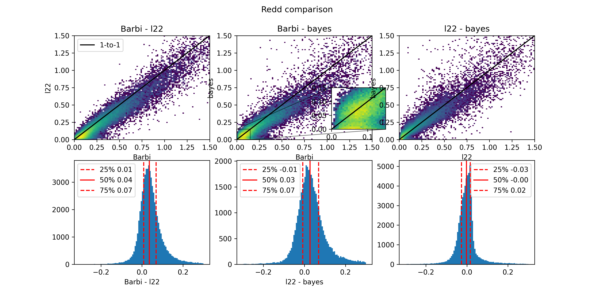

How to use it?#
Generating an extinction and reddening map#
To do this, you need a fits file that contains, at least, the galactic position and
distance, as well as reddening and extinction. All of them with uncertainties.
The naming convention should be l, b, dist, E_bprp, Ag,
and underscripted with _err, the corresponding uncertainties (e.g., dist_err).
Next, instantiate from the file or import DiscretizeReddMapMC:
disc_map = DiscretizeReddMapMC(file_dir, outfile,
rel_err_lim,
n_bins_b, n_bins_l, n_bins_r,
r_lim_min, r_lim, verbose=True)
Then, calculate the map speciying the number of MC iterations and save it (automatically in outfile):
disc_map.calculate_map(100)
disc_map.save_map()
Calculating extinction and reddening for stars#
To calculate reddening, the function get_redd_ext should be imported from the module calc_ext. Then, pass
the position and path for the previously generated map. For example:
red, ag, red_err, ag_err = get_redd_ext(l, b, dist, 'cumul_red_ag_barbillon.fits')
For D23’s halo sample (6D), the comparison can be found below. Beware that there is a systematic shift of around 0.03.
